Um dock.
Vários ambientes.
ATLAS é um dock para o GNOME com lente de ampliação. Cada ambiente guarda seus apps e widgets, tem uma cor própria e muda com um giro da roda do mouse.
Para GNOME Shell 46, em Wayland e em X11.
O que cabe no dock
O nome é uma sigla, e cada letra é uma parte do dock.
- Ambientes
- Conjuntos de apps e widgets com nome e cor, como Trabalho, Estudo e Lazer.
- Tarefas
- Pomodoro, cronômetro, timer, contagem regressiva e nota, ao lado dos apps.
- Lançadores
- Os favoritos do GNOME, coleções que guardam vários apps num ícone e o botão da grade de apps.
- Aplicativos
- Indicador de app aberto, prévia ao vivo das janelas e menu de clique direito.
- Sistema
- Bateria, rede, CPU, memória, música e mensagens não lidas, sem pesar.
Cada contexto, o seu dock
Um ambiente guarda os apps, os widgets e a cor de um momento do dia. Ao trocar, o dock inteiro muda e o nome aparece rapidamente.
- Roda do mouse sobre o dock.
- Super + Alt + ← ou → para o anterior e o próximo.
- Ctrl + Alt + 1 a 9 para ir direto ao ambiente da posição.
- O ambiente marcado entra sozinho quando o Não perturbe do GNOME liga, e volta ao anterior quando desliga.
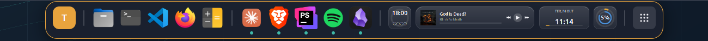
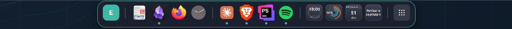
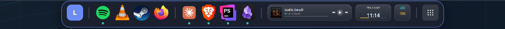
Widgets que abrem um painel
Os tiles ficam no dock, desenhados com anéis, gráficos e ponteiros. Um clique abre o painel. Há outros widgets além destes sete.
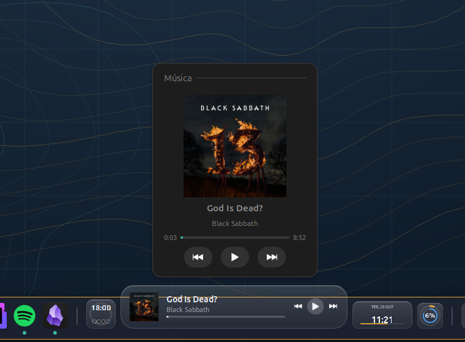
Veja a janela antes de abrir
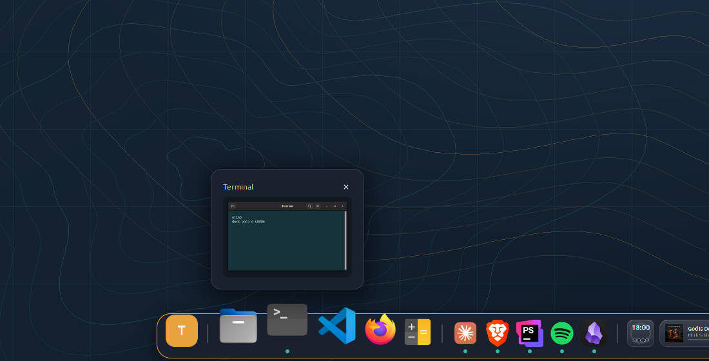
Ao parar o mouse sobre um app aberto, o dock mostra uma miniatura ao vivo de cada janela. Um clique traz a janela, e o X ou o clique do meio fecha.
O clique direito abre o menu do app: ações, nova janela, fixar ou desafixar e fechar janelas.
Seis temas, um por ambiente se quiser
O tema vale para o dock inteiro, e cada ambiente pode ter o seu. A cor da borda vem do ambiente.
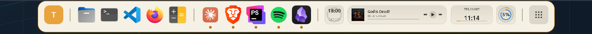
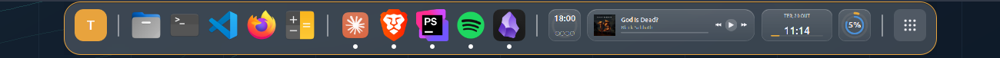
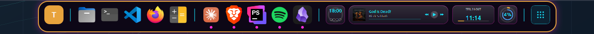
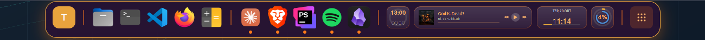
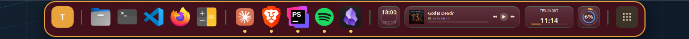
Tudo se controla pelas preferências
Cada comportamento do ATLAS tem uma opção na janela de preferências, sem editar arquivo. As mudanças valem na hora, com o dock aberto.
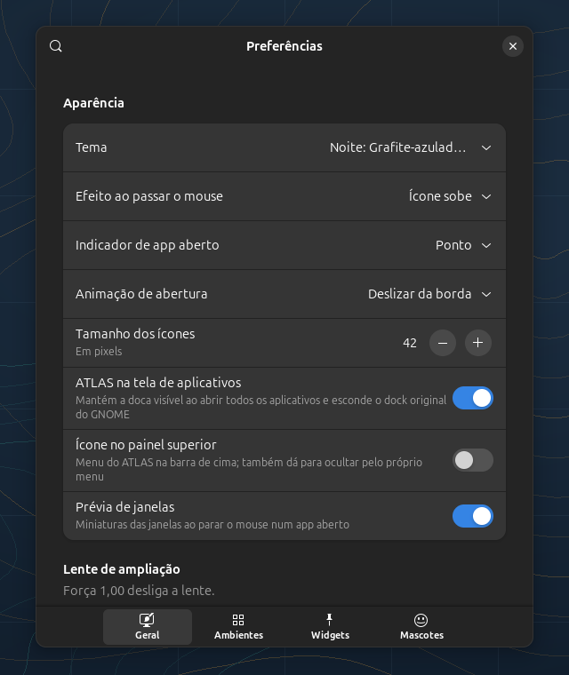
As opções são GSettings, então o dock reage ao vivo, sem reiniciar o GNOME Shell.
Mascotes que aparecem na hora certa
Começam desligados. Parados, o custo é quase zero. Não aparecem com o dock escondido, na visão geral de atividades nem com o Não perturbe ligado.
Leve o bastante para esquecer que existe
Medido por dentro, com um cronômetro em cada temporizador e em cada desenho. Comparar o gnome-shell ligado e desligado só mede ruído.
Feito para uma versão só
Cada distribuição e cada configuração do Linux muda alguma coisa, e não dá para garantir que tudo funcione em todas. Por isso o ATLAS mira um ambiente e funciona bem nele.
- Testado
- GNOME Shell 46, em Wayland e em X11
- Não testado
- Outras versões do GNOME e outras distribuições
- Tecnologia
- Extensão em GJS, ajustes em GSettings e janela de preferências em libadwaita
- Situação
- Projeto pessoal em desenvolvimento, de código fechado. Versão 0.3.0